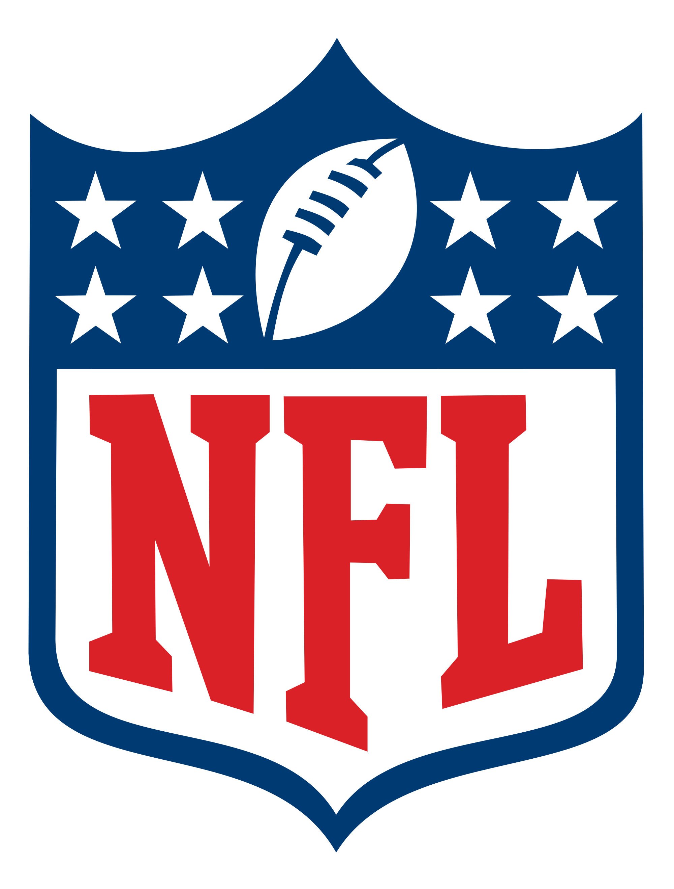

Complex rules of the complex game
American football is one of the most interesting and complex sports in the world. It is a sport game played by two teams of 11 players on a 120-yard rectangular field with goal lines on each end. The objective of the game is for one team to outscore the other. The offense, or the team with control of the ball, attempts to advance the ball down the field by running or passing the ball, while the opposing team aims to stop their advance and tries to take control of the ball. The offense must advance at least 10 yards in four downs, or plays, or else they turn over the football to the opposing team; if they succeed, they are given a new set of four downs. The place where the ball goes down becomes the line of scrimmage, and it is where the ball is placed for the start of the next play. Scoring can occur in the form of a touchdown (6 points), an extra point conversion (1 point), a two-point conversion (2 points), a field goal (3 points) or a safety (2 points).
For better and more detailed explanations of the rules we advise you to read this article and watch this video. If you are already into the game, you can find full games on this channel.
So big data
Being one of the most intricate sports in the world makes american football also one of the most interesting to explore. This sport game is made up of several key moments one of which is hand-off - the act of handing the ball directly from one player to another, i.e. without it leaving the first player's hands. To explore this interesting aspect of the game and, in general, the game itself, we used NFL dataset from kaggle competition "NFL Big Data Bowl". The dataset contains numerous statistics about the game (e.g. location) as well as players (e.g. position, speed, direction) all recorded at the time of hand-off.